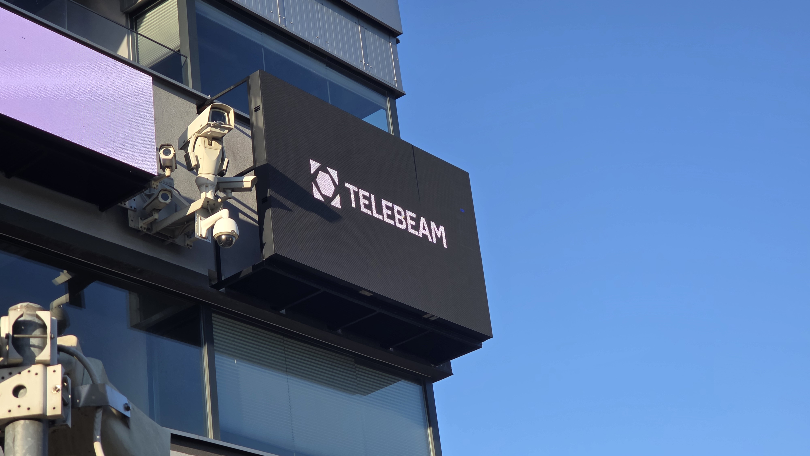

Jakub Kopiszka
Junior Developer | Railway Safety & Automation
I am truly passionate about programming, railway traffic safety, and embedded systems. I have a strong preference for combining software with hardware. Since I’m a big transport enthusiast, working in this field is the perfect fit for me.

Railway Safety & Automation
I am fascinated by railway infrastructure, signalling systems, traffic control automation and transport safety. I aim to develop my career in modern railway technologies and their integration with contemporary software solutions.
Technologies
Major
Minor
Projects

TeleBeam
Designed for smaller football clubs application, simultaneously displaying scoreboard with possibility to display goals, cards, messages etc.